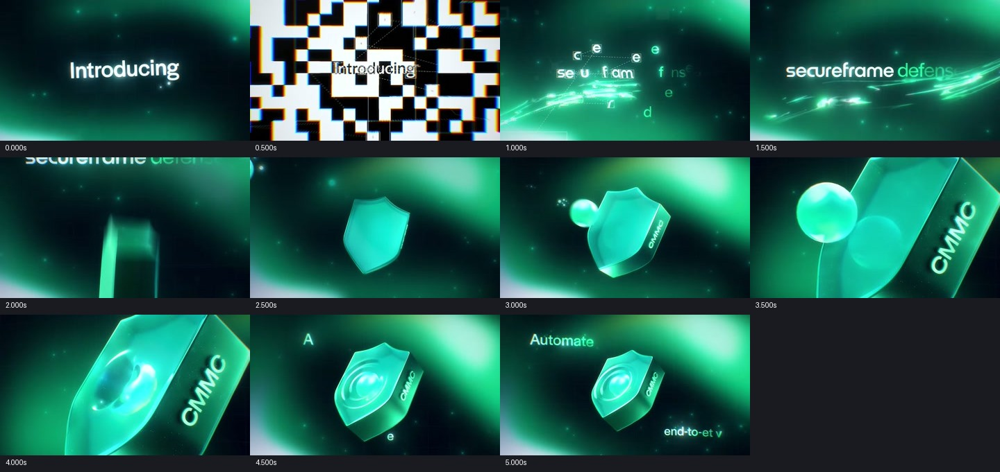
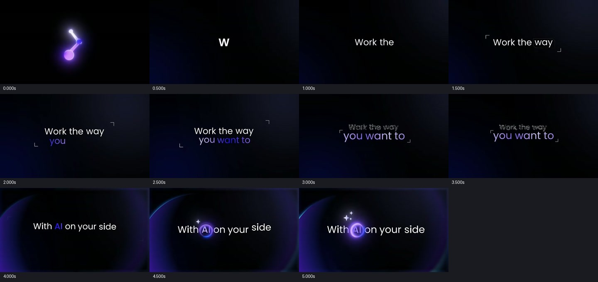

01 / 36.523 秒 · 完整视频 · 有音轨
BoltForge
读屏时停住，点击前突然推近
9.88–10.08 秒从输入框推到发送按钮；接触之后拉远交给结果。28.5 秒以后保留箭头，让图片和作品群接着它展开。外层进度条属于拆解包装，不搬进产品广告。
作者原页 ↗6 段新增参考，逐段拆解运镜、对象交接与阅读停顿。下方时间按钮可直接跳到分析位置，支持半速播放，连续帧可以展开核对
输入、参数和结果需要稳定阅读；快片也保留慢段
把镜头旅行压短；起步、加速、刹停有明显区别
一次点击、一次结果、一处主拍；其他地方允许安静
9.88–10.08 秒从输入框推到发送按钮；接触之后拉远交给结果。28.5 秒以后保留箭头，让图片和作品群接着它展开。外层进度条属于拆解包装，不搬进产品广告。
作者原页 ↗7.75–9.3 秒沿斜向卡片队列穿行，近处大且快，远处小且慢。随后卡片落入真实编辑器。12.5–18.5 秒放慢展示选字、菜单与改色，快慢服务不同信息。
作者原页 ↗卡片落入界面，镜头转正。被选中的衣服留在画面内，周围卡片退去，右边出现详情。作者确认使用 AE 3D 相机、景深和自定义模糊转场；具体曲线不可从成片反推。
作者原页 ↗作品弧线之后切到容器角落极近景，再拉远为上传框。后面出现拖入图片的动作。学习有意义的局部放大，不复制绿色发光风格。
作者原页 ↗名称重组为品牌，盾牌进场，碰撞后改变景别，再拉远解释价值。盾牌服务安全产品，不能因为酷就放进坤坤。这里只借鉴动作前后共享一个主形状。
作者原页 ↗
词组依次建立层级，一组退出时另一组还停留。新信息接着原来的视觉重心出现。坤坤保留现有深灰与次级灰，不搬紫色，也不给每个字同样的弹跳。
作者原页 ↗
V4 的声音以零散 UI 采样为主，20 ms 窗口约 81% 低于 −45 dBFS。这次加入音乐脉冲、压低读屏段、在结果前收掉音乐，再让结果重入
观察和推断分开记录：作者公开确认了 AE 3D 相机等制作方法，具体 GSAP 曲线与秒数是本次实现选择。声音仅完成文件、能量和时间对应分析，未实际耳听验收。参考影片只用于研究，没有拼入坤坤成片